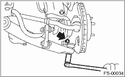

FRONT SUSPENSION > Front Ball Joint
1. Lift-up the vehicle, and remove the front wheels.
2. Pull out the cotter pin from the ball stud, remove the castle nut, and extract the ball stud from the transverse link.
3. Remove the bolts which secure the ball joint to the housing.

4. Extract the ball joint from housing.